Currently pursuing final year of PhD in Human-Robot Interaction to study influence of robot (HRP2-kai) as assistant on the behaviour of humans in a co-worker scenarios. I am working in CNRS-AIST JRL, Tskuba, Japan and affiliated from University of Montpellier, France. My areas of interest are cognitive humanoid robotics, computer vision, deep learning, bio-robotics, machine learning, artificial intelligence and Automotive Infotronics. I am mostly developing on Matlab and C++ also sometimes Python.
Completed Bachelor of Engineering in Electronics and Instrumentation from Vellore Institute of Technology, India (2012). Master in Automatic Control and Robotics from Warsaw University of Technology, Poland (2015).
Université Montpellier
3 Years Course
Montpellier, France
Warsaw University of Technology
2 Years Course; CGPA - 4.4/5
Warsaw, Poland
Vellore Institute of Technology University
4 Years Course; CGPA - 7.6/10
Vellore, India
Intelligent Systems Research Institute Interactive Robotics Research
Group, AIST
Tsukuba, Japan
Google Lunar XPrize Team Puli Space
Budapest, Hungary
Flanders Make
Leuven, Belgium
Brigosha Technologies
IIT Guwahati, India
TIFAC-Core
Vellore, India
Projects undertaken @ Puli Space, Hungary
Puli Rover Localization and Mapping
A SLAM based simulation environment was designed to enable Puli rover operates autonomously and finish the required task in case manual control fails. As the rover moves and update its position based on the information it gains of environment and location of landmarks, it tries to follow the actual path, although as it moves further, it determines changes in the position of landmarks and therefore it deflects from the actual path, but the difference between the estimated (blue) and actual path (cyan) is minimum and rover manages to reach destination. After the localization and mapping is finished, the landmarks positions are updated again based on the rover’s estimation.
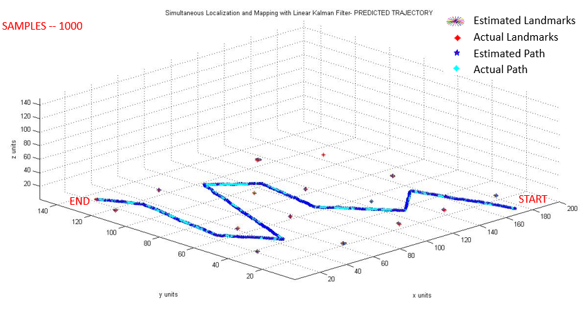
Live Depth estimation and Navigation
This project involved stereo image calibration and rectification, using a disparity map of the pixel points in each image, 3-D scenes were reconstructed of the environment. Later estimated depth of an object from the live video stream was obtained as the rover moves towards it.
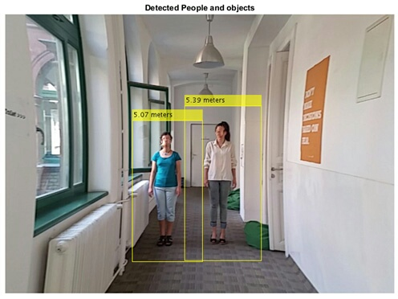
Rad-Hard
This project was more focused on the electonics aspect of Puli rover. Sole purpose of this experiment was to test and investigate the industrially available commercial electronic components mainly such as micro-controllers, motor drivers etc. under the moon like radiation environment on artificial earth laboratories. Below module was designed and fabricated to test under extreme gamma radation environment at Institute for Nuclear Research (MTA ATOMKI) in Debrecen, Hungary.
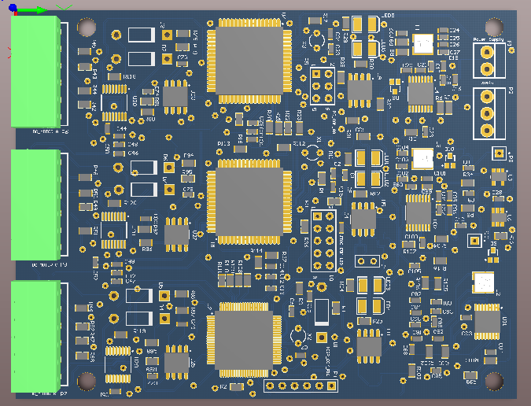
Projects undertaken @ Warsaw University of Technology (WUT)
SEEKUR Jr. TERABOT Trajectory Generation
Completed a Group Project on the study and simulation of SEEKUR Jr. TERABOT S MANIPULATOR KINEMATICS. Results were obtained both mathematically and using matlab Simulink, also different motion trajectories were obtained for its 5 DOF manipulator.
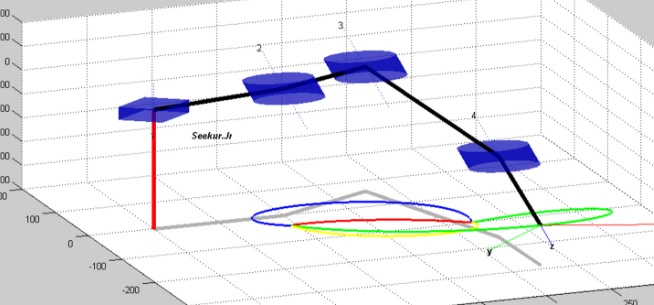
ButterBot
A project was started and still developing a biologically inspired aerial- land vehicle. Aim of this project is to develop efficient design of butterfly inspired robot for surveillance, search and rescue operations and in other real life applications.
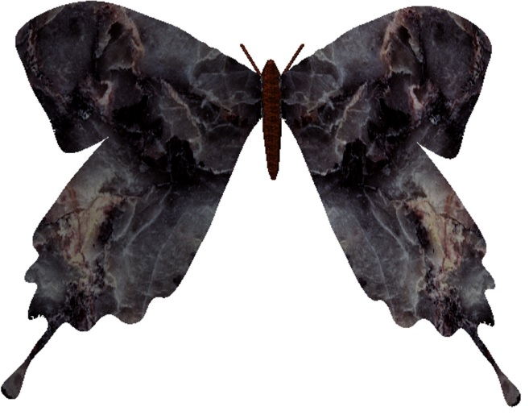
Project undertaken @ FTMC, Belgium
2-D Badminton playing robot Trajectory Estimation
Goal of this internship was to evaluate the MEMS IMU and feasibility study of trajectory estimation based on IMU signals for 2-D badminton playing robot. Ultra wide band ubisense were used for reference trajectories.
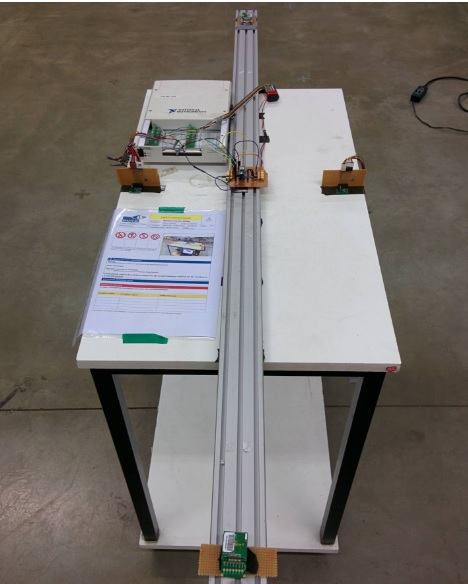
Projects undertaken @ TIFAC-CORE (R & D Department of Govt of India)
Universal Gateway
A project work was initiated into the implementation of UNIVERSAL GATEWAY with the objective to develop a single platform for common communication between different protocols LIN, CAN, FlexRay and MOST.
MOST
Successfully completed an internship on hardware implementation of MOST25 protocol with MOST demo tools. This project shows the design and implementation of an in-lab in-car infotainment system, which uses the MOST field bus as a backbone. The infotainment system was built around two INIC Evaluation Platforms directly interfaced with individual PCs also in conjunction with MOST Amplifier and DVD Player4 MOST, etc.
3 Node CAN
A project completed on 3 NODE communication using CAN protocol which involves the control of one node’s sensors, ECUs such as body electronics in conjunction with powertrain and chassis from another node and vice-versa depending on priorities. Safety- electronic parking brake Body control- HVAC Powertrain- electronic throttle control Chassis- motor control.
LIN Network
Completed a project on LIN PROTOCOL in order to test the capabilities of master-slave, time triggered protocol and because its low speed, LIN was used in on-off devices such as car seats, door locks, door mirrors, rain sensors and sunroofs. steering wheel- wiper, radio, roof top, rain sensor, engine climate- small motors door seat- mirror, central ECU.
Projects undertaken @ Vellore Institute of Technology (VIT)
OFDMA/CDMA based Hybrid Multiple Access
Completed final year project on OFDMA/CDMA based hybrid multiple access. In this project a new hybrid multiple access technique was developed with the combined advantages of both OFDMA and WCDMA technologies.
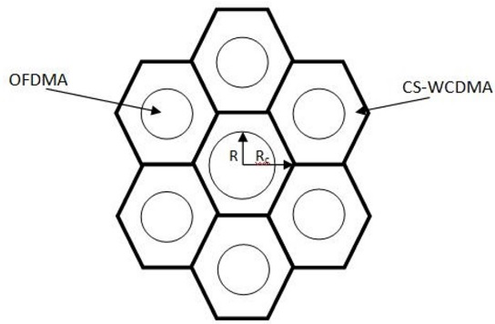
All Terrain Vehicle
Worked for SAE MINI BAJA India 2011 and developed an electrical & electronics system such as the dashboard, speedometer, emergency switching etc. of a real time all-terrain vehicle.
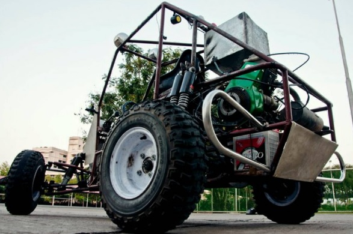
Micromouse
Develop a working model of MICROMOUSE as the part of academic curriculum. Robot was equipped with the array of IR sensors and was able to tackle most practical problems encountered in real situations.
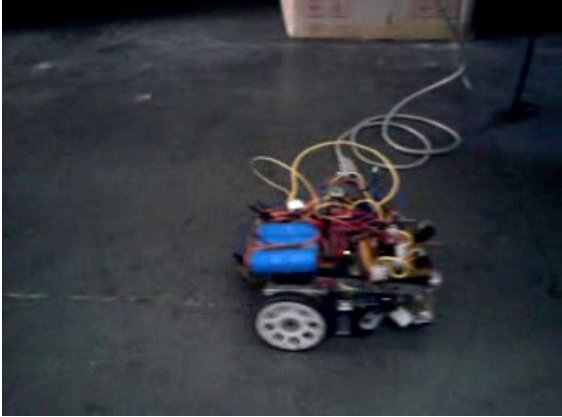
BalBot
Develop a balancing robot using MEMS accelerometer sensor under AT SOLUTIONS which balance itself with two wheels by measuring the gravity across all three xyz axis.
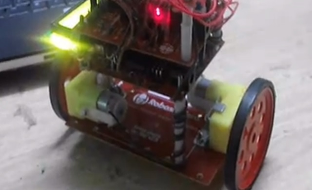
SmartCar
Develop a RF WIRELESS SYSTEM using ASK modulation based Rx-Tx module at a frequency of 433MHZ and was used during the development of wireless mobile robots.
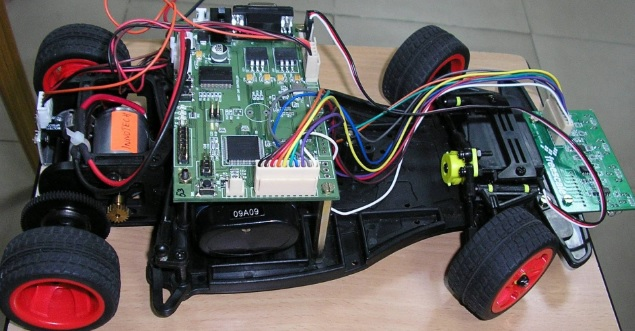
TrackBot
A project work was carried out to develop a robot (OBJECT FOLLOWER) using computer vision in order to follow an object such as a ball of its initial location.
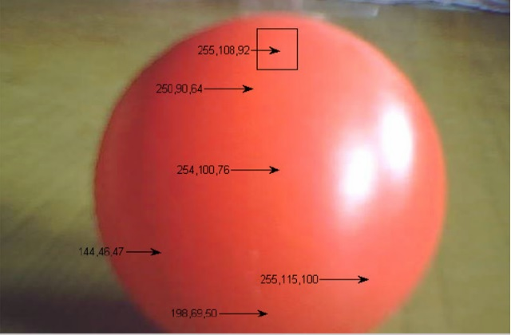
last updated 10th March' 19